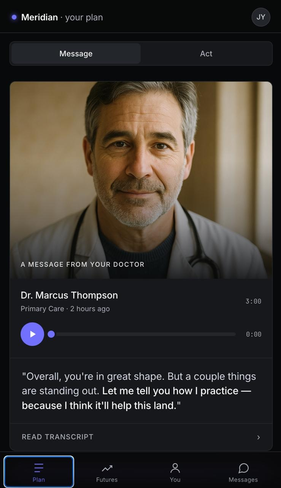
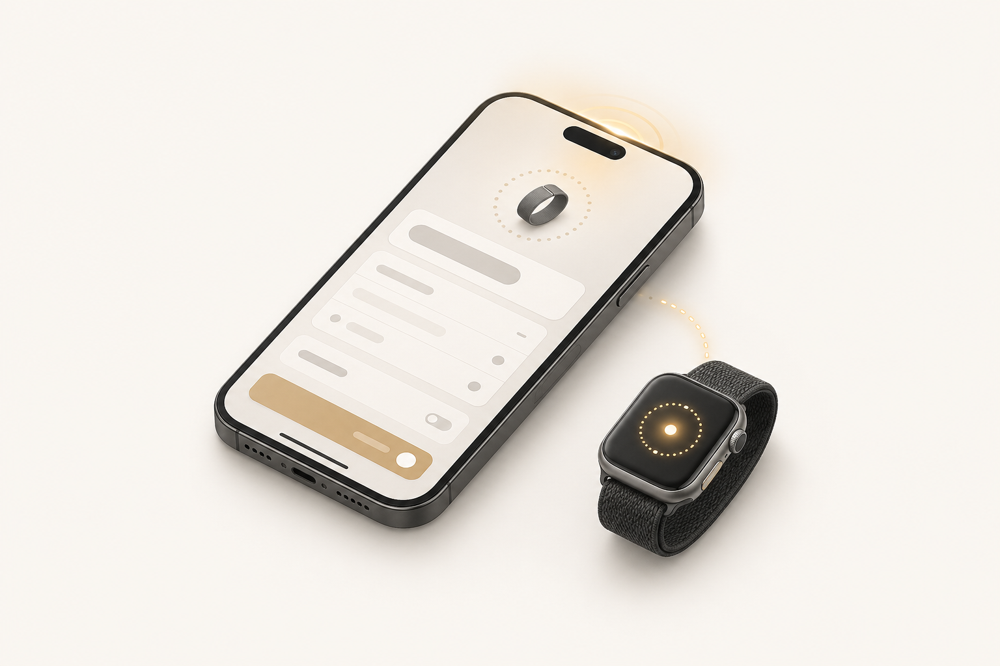
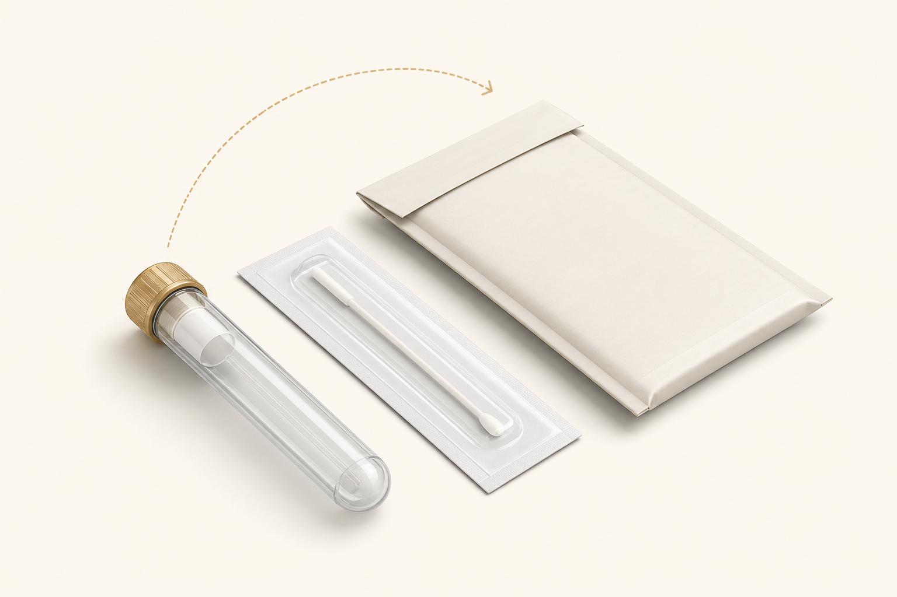
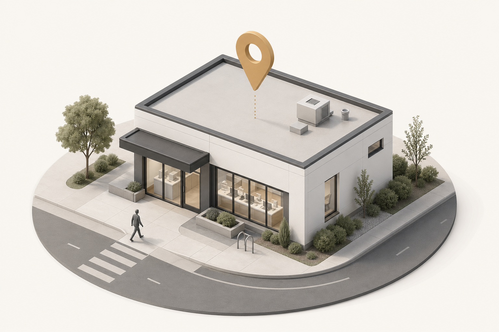
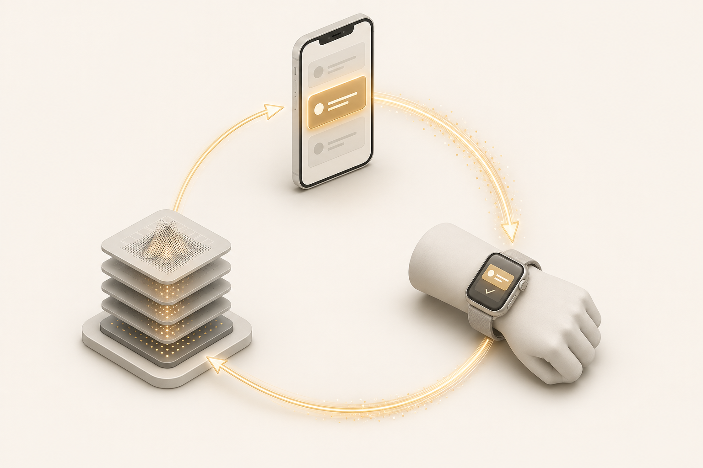

The Aleron Project
Some of your best days are still ahead.
The medical team you'd build for yourself if you knew where to look. Continuous, AI-augmented, physician-led prevention — for people whose decline is still negotiable.
Scroll
The medical team you'd build for yourself if you knew where to look. Continuous, AI-augmented, physician-led prevention — for people whose decline is still negotiable.
The average American. Plotted across the years that decide everything. By the time the slope is obvious from a snapshot, it's been obvious for years to anyone who was actually looking.
Climb, ski, lift, stay up late, fly across time zones, recover by Tuesday. The body still says yes. This is the window where the curve is being set — quietly, in the background, by what you do and don't catch.
Stairs become a problem. The grandkids visit and you watch from the chair. The interventions that would have changed the slope had to happen 30 years earlier — but no one was running the model.
Every domain — cardiovascular, metabolic, neurological, oncologic — has a slope. We measure all of them, continuously, and act on the ones bending wrong. A continuous medical relationship that keeps this curve as flat as it can be, for as long as it can be.
Four layers of machinery. Classical medicine on top. Frontier AI in the middle. Ranked actions below. One thing to actually do at the bottom. Each layer does the part no person — or single model — can do alone, and hands the result to the next.
Cardiovascular. Metabolic. Oncologic. Neurologic. Renal. Each model takes your full data picture — genome, labs, wearables, history — and computes one number per domain: how is this trajectory bending, and how fast. This is the part of the engine your physician already speaks.
The risk signals get convened in a structured board review: claude-sonnet-4, gpt-5.5, gemini-2.5-pro, grok-3 — each working independently against the BioMCP medical-knowledge graph and the OpenEvidence research index. Where models concur, the finding strengthens. Where they disagree, the conflict gets surfaced — not buried. This is the part no chatbot wrapper can replicate.
The Attention Layer takes the board's synthesis and ranks every plausible action by what's actually changeable, today, with the highest leverage. Most prevention products give you a 40-page report. We give you the priority queue, weighted and ordered.
The Action Layer translates the top-ranked priority into a concrete plan, attaches the evidence, and hands it to your Aleron MD. They review, customize for your life, and send you a voice message — not a notification, not a chatbot summary. The next thing to do, in your physician's voice.

A real physician, holding your picture — multiplied by an Engine that holds everything at once.
The Engine does the holding-everything-at-once part. Your Aleron MD does the part you can't automate — the judgment, the gut check, the call you actually want to take.
When something matters, you'll get a voice message from your physician — not a notification, not a chatbot summary. They'll explain what they're seeing, why it matters for you specifically, and the one thing to do this week.
Your physician records the explanation directly. Tone, nuance, and emphasis intact.
Send a question and get an answer back from the same person, the same day.
No starting over, no recapping. Your genetics, labs, and history are in the room.
Schedule a video visit any time. No referrals, no waiting on a panel.
Onboarding is not a forty-page intake form. Labs are not a waiting room. Your physician consult is not the end of the line — it's where the loop begins.




Demographics, family history, lifestyle, screening history — collected the way every other app on your phone does it. Then your wearable connects in two taps and starts streaming the signals your physician will actually use.
Spit in a tube. Drop it in the prepaid mailer. The 163-gene Invitae panel screens for the variants that actually change a care plan — moderate-penetrance cancer risks, cardiovascular variants, pharmacogenomic markers.
Your Aleron lab order is waiting at your nearest Quest patient service center. The Elite panel — a comprehensive metabolic, cardiovascular, and inflammatory marker workup — runs alongside an ApoB and Lp(a) draw most physicals miss.
CBC + CMP · ApoB · Lp(a) · hsCRP · HbA1c · TSH · Vitamin D · ferritin · homocysteine · uric acid · UACR
By the time you sit down, your physician has already reviewed every result, every wearable signal, and the output of every Aleron risk model. The hour is spent on what to do — not on retelling your history.
You leave with one top priority — the single thing that moves your risk picture most. As you act, your wearable streams the result. New labs feed back in. The engine reruns. A new top priority surfaces. The loop is the product.
Same labs. Same body. Different decisions. When Aleron's engine + your physician review the full picture, the care plan changes for most members — because most prevention has been working from a partial picture.
The ~60% headline is the union of these drivers — the share of members for whom at least one reroute fires. It is not the sum (which would over-count). Drawn from PREVENT (AHA 2023), MESA / CAC Consortium reclassification studies, CPIC + PharmGKB pharmacogenomic actionability data, and clinical-grade genetic-panel actionable yield in adult preventive populations.
Not a one-time report. A continuous medical relationship.
167-gene panel screened for the variants that change medical management for life. The kind of test your doctor isn't ordering.
100-marker Quest Elite panel every six months. Trend lines, not snapshots. Proof that what you're doing is working.
Sleep, HRV, resting heart rate, training load — interpreted in the context of your genetics and labs, not as standalone numbers.
Unlimited access to a physician who has your full picture. No 15-minute visits. No starting over each time.
Your action plan re-prioritizes as your data evolves and as the literature evolves. The next thing to do is always one screen away.
We monitor relevant clinical research and tell you when something matters for your profile — not for the average person.
Not a feature list. A standard. The things every Aleron member can expect from us, every quarter, for as long as they're with us.
The reason your PCP can't think about you is structural — they have a panel of 2,000. Ours don't. So when you call, the person on the other end has held your full picture in their head this week.
Your risk picture is rerun every 90 days — five domain models, four frontier AIs, two medical knowledge graphs, your physician on top. New data forces a fresh top priority. The plan never sits still.
No portals. No front desk. A message reaches the same physician who knows your full picture, and you'll have an answer the same day — usually as a voice note, in their voice.
You will never receive a 40-page report. You will never be told to "do more." You will receive one thing to do this week — the highest-leverage move on your specific picture, with the evidence attached.
An annual physical asks: where are you today? Aleron asks: where is your trajectory bending, and what are we doing about it before it's obvious. The work doesn't stop between visits — it is the visits.
This is not a standard we market. It is a standard we enforce — by capping panels, by running the engine on a fixed cadence, by hiring physicians who want to practice this way.
If the rest of this page felt like the right shape — apply. We accept members in waves and review every application by hand. There is no faster path; there isn't supposed to be.
Membership opens in waves. Apply to be considered for the current cohort. We're currently serving members in Texas and California.
Apply →Bringing Aleron to your executives, members, or insureds? We'll walk you through a live demo of the platform and the methodology.
See a demo →